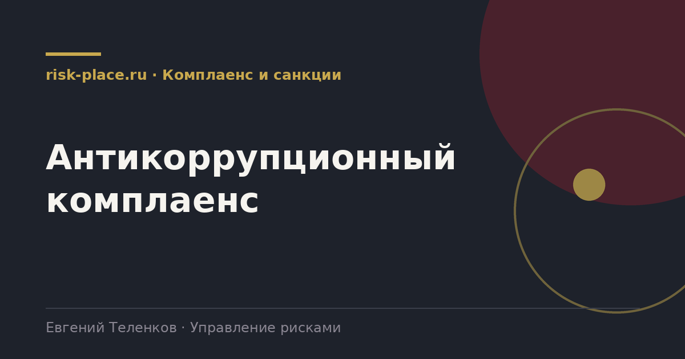

Главная · Библиотека · Комплаенс и санкции · Антикоррупционный комплаенс
Библиотека · Комплаенс и санкции
Единственное направление комплаенса, обязательное для всех организаций в России без исключений по размеру и форме.

Статья 13.3 Федерального закона от 25.12.2008 № 273-ФЗ «О противодействии коррупции» устанавливает, что организации обязаны разрабатывать и принимать меры по предупреждению коррупции. Обязанность распространяется на все организации, независимо от формы собственности и размера.
Закон приводит примерный перечень мер и не устанавливает конкретных требований к их содержанию. Это одновременно и свобода, и ловушка. Свобода в том, что компания сама определяет глубину. Ловушка в том, что при проверке или при возбуждении дела оценивается не наличие документа, а достаточность принятых мер.
Формируют минимальный каркас системы.
Практический комплект, который выдерживает проверку.
| Элемент | Содержание |
|---|---|
| Антикоррупционная политика | Позиция компании, запреты, зоны риска, ответственность, порядок действий при обращении |
| Ответственное лицо | Приказом, с полномочиями и прямым доступом к первому лицу |
| Декларирование конфликта интересов | Ежегодное и при возникновении. С формой, реестром и порядком урегулирования |
| Правила о подарках и представительских | Пороговые суммы, запреты, порядок согласования и учета |
| Проверка контрагентов | В том числе на связи с должностными лицами и на репутационные факторы |
| Канал сообщений | Горячая линия или адрес с гарантией защиты сообщившего и порядком рассмотрения |
| Обучение | Регулярное, с фиксацией прохождения. Отдельно для зон повышенного риска |
| Антикоррупционная оговорка | В договорах с контрагентами |
| Мониторинг и отчет | Периодическая оценка достаточности мер, отчет руководству |
Проверяющий смотрит на три вещи. Есть ли следы деятельности, а не только документы. Были ли обращения на канал и как они рассмотрены, при полном отсутствии обращений за несколько лет обычно делается вывод, что канал не работает. И была ли реакция на выявленные случаи, в том числе в отношении руководителей.
Отсюда простой ориентир для самопроверки. Возьмите последние двенадцать месяцев и найдите пять записей, декларации конфликта интересов, протокол урегулирования, журнал обучения, отчет о проверке контрагента с отказом, рассмотренное обращение. Если хотя бы трех из пяти нет, система существует только на бумаге.
Частые вопросы
Одна форма для любого вопроса
Расскажем о ближайших датах, предложим формат под ваш состав участников и назовем порядок бюджета.
Предпочитаете почту — напишите на info@risk-place.ru. Адрес: Москва, улица Скаковая, 32с2.
 risk-
risk-